补充：公共品提供的进一步讨论
补充讲义：公共品需求加总的图形推导、林达尔均衡与萨缪尔森条件、俱乐部品与拥挤、以及现实中的公共品供给案例。
本讲要点
- 需求纵向加总
- 萨缪尔森条件
- 林达尔价格
- 俱乐部品
- 拥挤 externality
- 案例
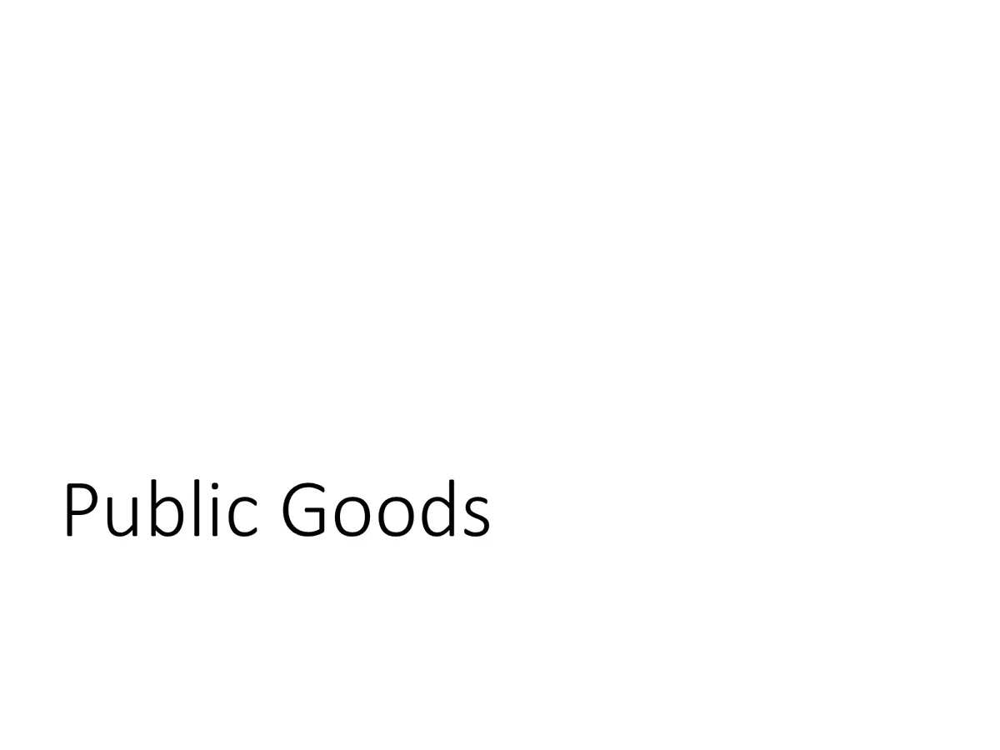
这一份是公共品（Public Goods）的补充课件，只有 36 页，但把第 8 讲最核心的一张表、一条加总规则和两个失灵讲得很完整。
先给结论，让你带着地图听课：
- 判断一种东西是不是公共品，只看两个属性——能不能排他、消费上是否竞争。
- 公共品的市场需求不是横向加总，而是纵向加总。
- 公共品会遭遇搭便车，共有资源会遭遇公地悲剧；两者都是「私人算账 ≠ 社会算账」。
幻灯片原文 / 板书
Public Goods
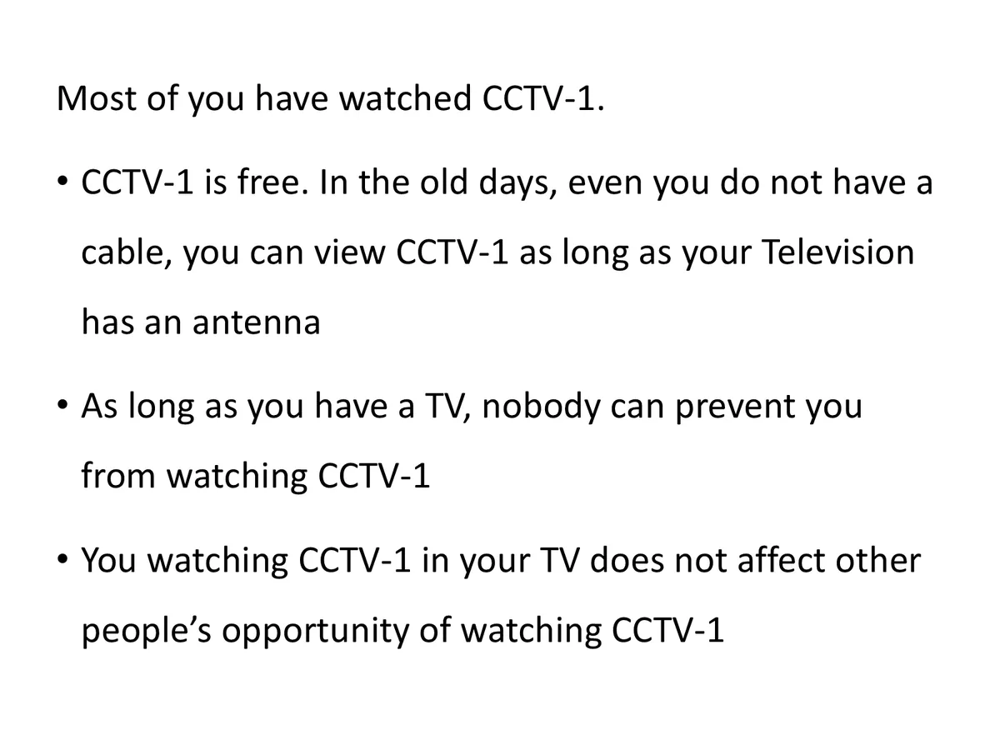
开场用一个中国人最熟的例子：CCTV-1（央视一套）。
它的三个特点：
- 免费：过去只要你家电视有天线，就能收到。
- 无法排他：只要你有电视，没有人能阻止你看 CCTV-1。
- 不竞争：你看 CCTV-1，丝毫不影响别人看 CCTV-1。
这三句话就是公共品的全部特征，后面只是把它们变成定义。
幻灯片原文 / 板书
Most of you have watched CCTV-1. CCTV-1 is free. In the old days, even you do not have a cable, you can view CCTV-1 as long as your Television has an antenna As long as you have a TV, nobody can prevent you from watching CCTV-1 You watching CCTV-1 in your TV does not affect other people’s opportunity of watching CCTV-1
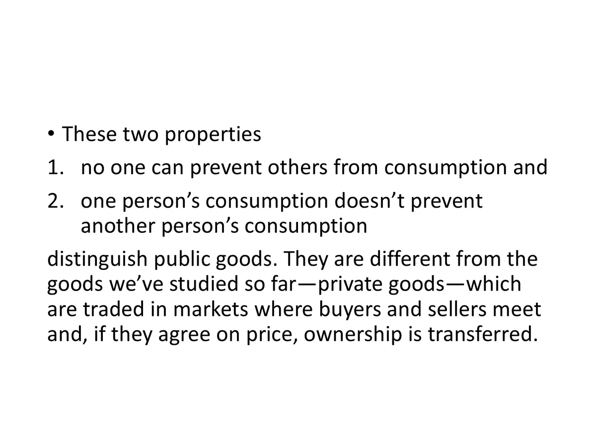
把上页的三句话抽象成两个性质：
- 没有人能阻止别人消费（non-excludable，不可排他）。
- 一个人的消费不减少别人的消费（non-rival，非竞争）。
这两个性质把公共品与我们此前研究的所有商品区分开来。此前的商品叫私人物品（private goods）：在市场上买卖，买卖双方谈好价格，所有权转移——我买了这块面包，你就吃不到了。
公共品不是这样交易的：它根本没有「所有权转移」这个环节，因为没法把别人挡在外面。
幻灯片原文 / 板书
These two properties no one can prevent others from consumption and one person’s consumption doesn’t prevent another person’s consumption distinguish public goods. They are different from the goods we’ve studied so far—private goods—which are traded in markets where buyers and sellers meet and, if they agree on price, ownership is transferred.
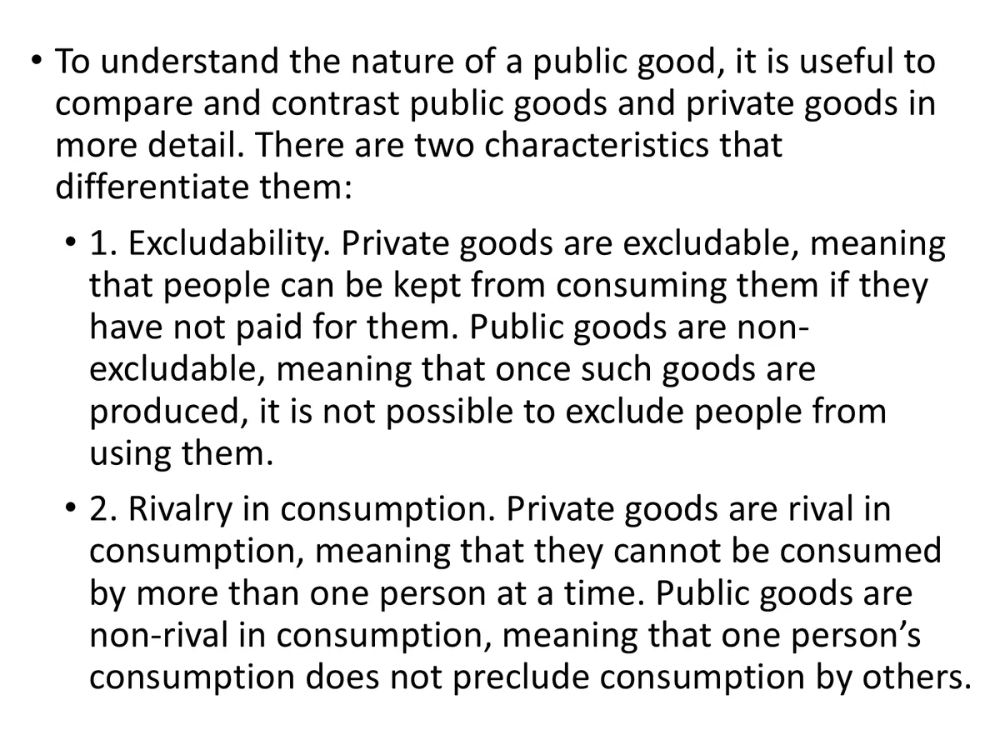
正式定义两个维度（这是本讲最该背的一段）：
1. 排他性（excludability）
- 私人物品可排他：没付钱的人可以被挡在外面。
- 公共品不可排他：一旦生产出来，就不可能把任何人排除在使用之外。
2. 消费的竞争性（rivalry in consumption）
- 私人物品竞争：同一时刻只能被一个人消费。
- 公共品非竞争：一个人消费不妨碍别人消费。
注意：这两个维度是独立的。正是它们的独立组合，产生了下一页的四类物品。
幻灯片原文 / 板书
To understand the nature of a public good, it is useful to compare and contrast public goods and private goods in more detail. There are two characteristics that differentiate them: 1. Excludability. Private goods are excludable, meaning that people can be kept from consuming them if they have not paid for them. Public goods are non-excludable, meaning that once such goods are produced, it is not possible to exclude people from using them. 2. Rivalry in consumption. Private goods are rival in consumption, meaning that they cannot be consumed by more than one person at a time. Public goods are non-rival in consumption, meaning that one person’s consumption does not preclude consumption by others.
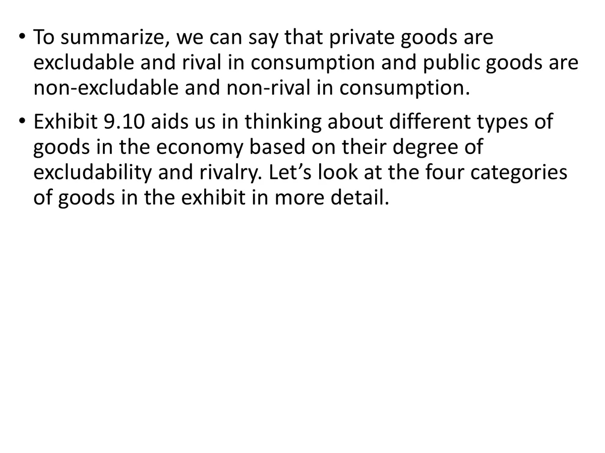
小结成一句对照：
私人物品 = 可排他 + 竞争；公共品 = 不可排他 + 非竞争。
但世界不是二分的。课件接着用 Exhibit 9.10 这张 2×2 表，按「排他性高低」和「竞争性高低」两个维度，把经济中的物品分成四类。下一页就是这张表——它是整个第 8 讲的骨架图，请务必记住四个格子的位置。
幻灯片原文 / 板书
To summarize, we can say that private goods are excludable and rival in consumption and public goods are non-excludable and non-rival in consumption. Exhibit 9.10 aids us in thinking about different types of goods in the economy based on their degree of excludability and rivalry. Let’s look at the four categories of goods in the exhibit in more detail.
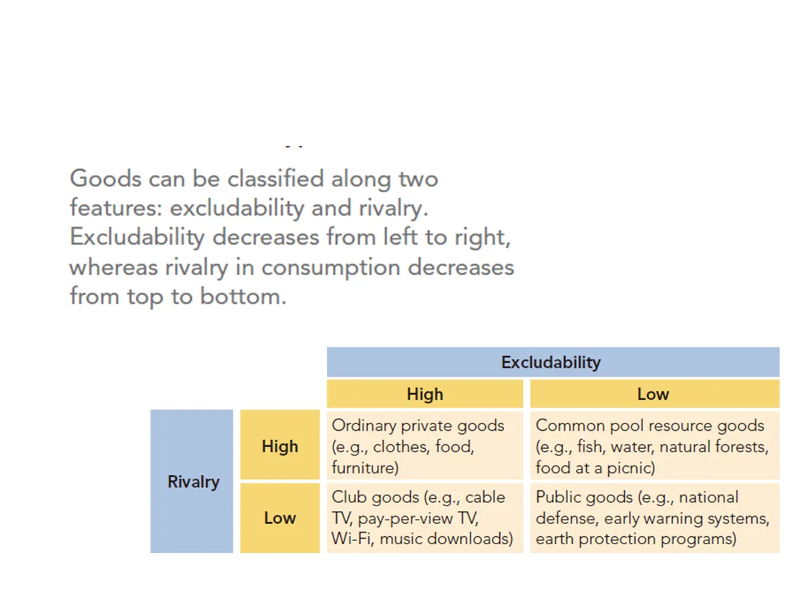
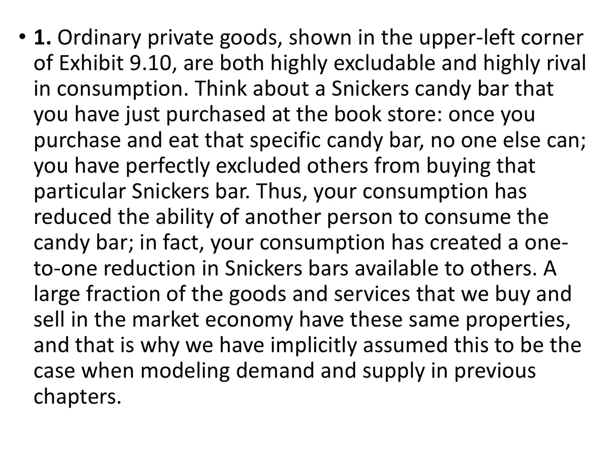
第一格：普通私人物品（左上角，高度可排他 + 高度竞争）。
课件的例子是书店里的一块士力架（Snickers）：
- 你付钱买下并吃掉它，别人就吃不到——完美排他。
- 你吃掉一块，货架上就少一块——一对一的减少。
关键的一句话：市场经济中我们买卖的绝大部分商品和服务都有这两个性质，所以前面几章在建模需求与供给时，默认假设就是私人物品。这一页是在提醒你：那个默认假设有边界。
幻灯片原文 / 板书
1. Ordinary private goods, shown in the upper-left corner of Exhibit 9.10, are both highly excludable and highly rival in consumption. Think about a Snickers candy bar that you have just purchased at the book store: once you purchase and eat that specific candy bar, no one else can; you have perfectly excluded others from buying that particular Snickers bar. Thus, your consumption has reduced the ability of another person to consume the candy bar; in fact, your consumption has created a one-to-one reduction in Snickers bars available to others. A large fraction of the goods and services that we buy and sell in the market economy have these same properties, and that is why we have implicitly assumed this to be the case when modeling demand and supply in previous chapters.
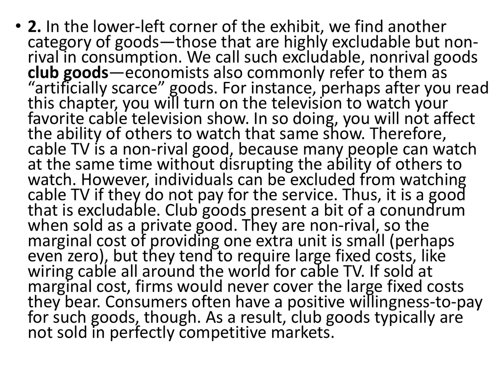
第二格：俱乐部物品（左下角，高度可排他 + 非竞争）。经济学也叫它「人为稀缺品」（artificially scarce goods）。
课件例子：有线电视。
- 非竞争：你看你的节目，不影响别人看同一个节目。
- 可排他：不付费就接不进信号。
为什么叫「人为稀缺」？因为它的稀缺不是技术造成的，是收费造成的——如果免费开放，多一个人看的边际成本几乎为零。
于是它带来一个真实的定价难题：
- 若按边际成本定价（≈0），企业收不回铺设线路的巨额固定成本。
- 若高于边际成本定价，就会把一部分愿意付钱的人挡在外面，效率受损。
所以俱乐部物品通常不会在完全竞争市场上出售。这个矛盾在第 12 讲（信息产品）会以「高固定成本 + 近零边际成本」的形式再次出现。
幻灯片原文 / 板书
2. In the lower-left corner of the exhibit, we find another category of goods—those that are highly excludable but non-rival in consumption. We call such excludable, nonrival goods club goods—economists also commonly refer to them as “artificially scarce” goods. For instance, perhaps after you read this chapter, you will turn on the television to watch your favorite cable television show. In so doing, you will not affect the ability of others to watch that same show. Therefore, cable TV is a non-rival good, because many people can watch at the same time without disrupting the ability of others to watch. However, individuals can be excluded from watching cable TV if they do not pay for the service. Thus, it is a good that is excludable. Club goods present a bit of a conundrum when sold as a private good. They are non-rival, so the marginal cost of providing one extra unit is small (perhaps even zero), but they tend to require large fixed costs, like wiring cable all around the world for cable TV. If sold at marginal cost, firms would never cover the large fixed costs they bear. Consumers often have a positive willingness-to-pay for such goods, though. As a result, club goods typically are not sold in perfectly competitive markets.
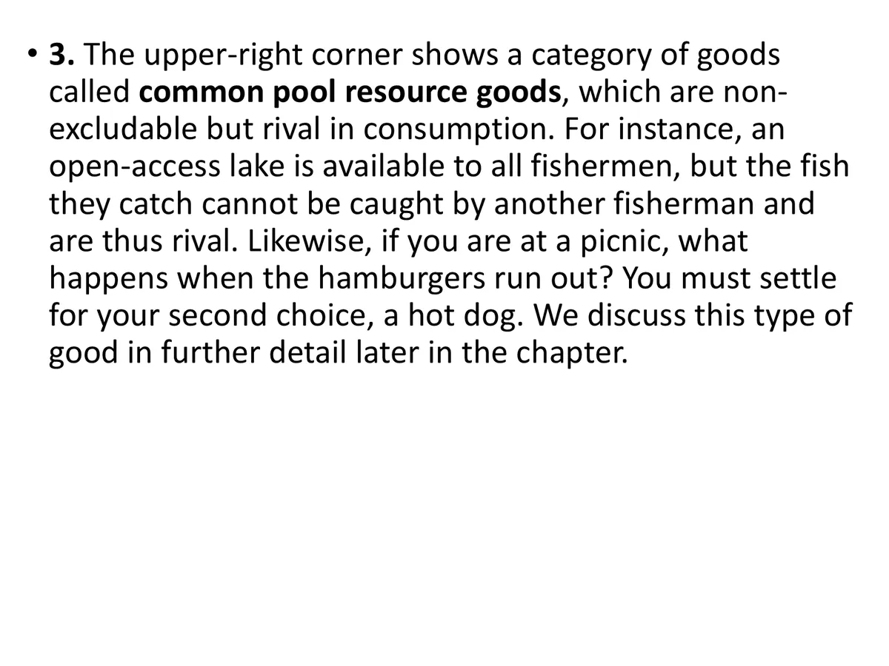
第三格：共有资源（右上角，不可排他 + 竞争）。
课件给了两个例子：
- 开放湖泊：谁都能来捕鱼（不可排他），但你捕走的鱼别人就捕不到（竞争）。
- 野餐会上的汉堡：谁都能拿（不可排他），但汉堡被拿光之后，后来的人只能吃热狗（竞争）。
注意这一格与公共品的区别：它是竞争的。正因为竞争，才会有「用光」的问题——这就是后面要讲的公地悲剧。
幻灯片原文 / 板书
3. The upper-right corner shows a category of goods called common pool resource goods, which are non-excludable but rival in consumption. For instance, an open-access lake is available to all fishermen, but the fish they catch cannot be caught by another fisherman and are thus rival. Likewise, if you are at a picnic, what happens when the hamburgers run out? You must settle for your second choice, a hot dog. We discuss this type of good in further detail later in the chapter.
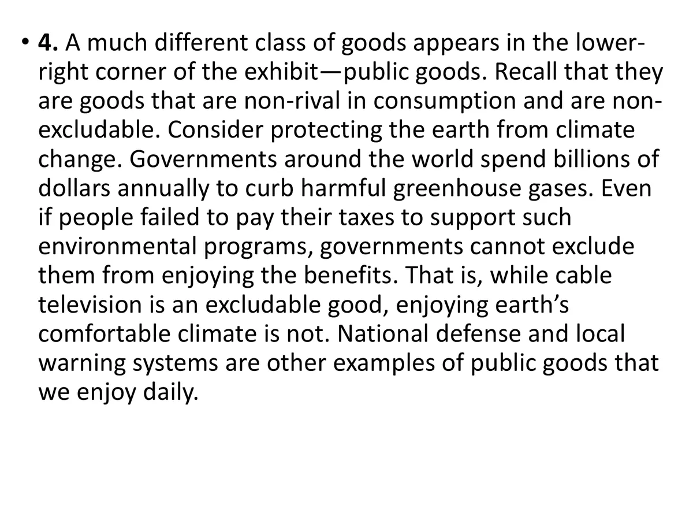
第四格：公共品（右下角，非竞争 + 不可排他）。
课件的例子是应对气候变化：各国政府每年花几十亿美元减排。
- 即使某人没交税支持这些项目，政府也无法把他排除在「享受宜居气候」之外。
- 所以「享受舒适的地球气候」不可排他；有线电视则相反，是可排他的。
另外两个日常例子：国防（national defense）和地方灾害预警系统（local warning systems）。你享受它们的保护，无论你是否付费。
幻灯片原文 / 板书
4. A much different class of goods appears in the lower-right corner of the exhibit—public goods. Recall that they are goods that are non-rival in consumption and are non-excludable. Consider protecting the earth from climate change. Governments around the world spend billions of dollars annually to curb harmful greenhouse gases. Even if people failed to pay their taxes to support such environmental programs, governments cannot exclude them from enjoying the benefits. That is, while cable television is an excludable good, enjoying earth’s comfortable climate is not. National defense and local warning systems are other examples of public goods that we enjoy daily.
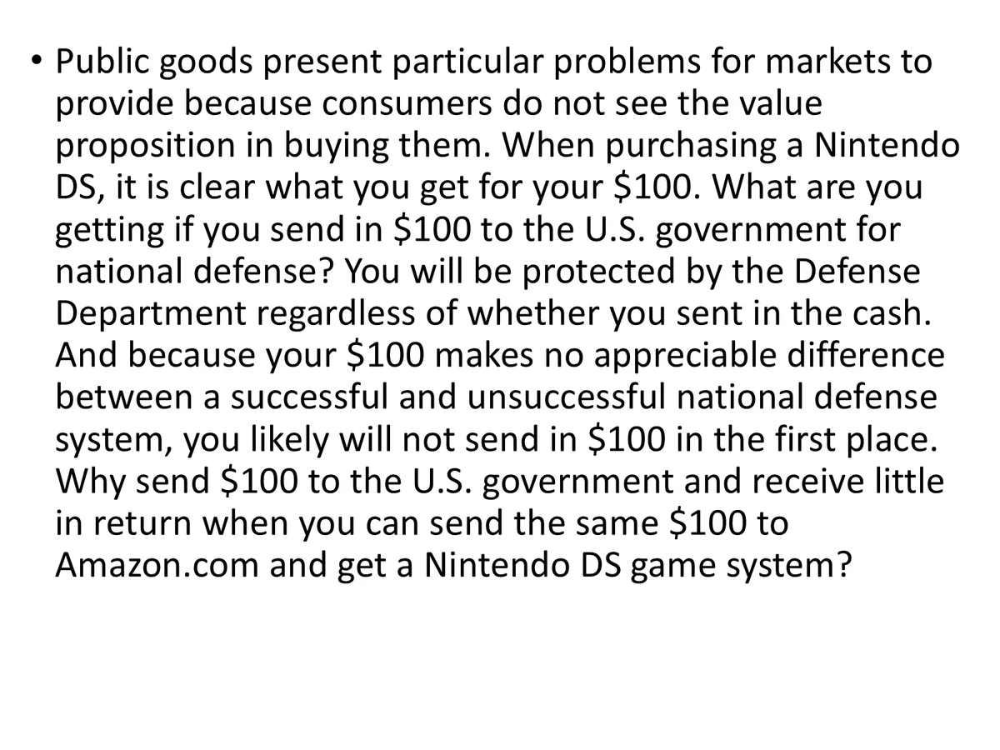
公共品给市场出了个难题：消费者看不出「买它」的价值在哪里。
课件用任天堂 DS 做对比：
- 花 100 美元买一台 Nintendo DS，你很清楚自己得到了什么——一台机器，归你。
- 花 100 美元捐给美国政府做国防呢？无论你捐不捐，国防部都会保护你；而且你那 100 美元对国防成败毫无可感知的影响。
于是理性选择是：不捐。同样的 100 美元，拿去亚马逊买游戏机，收益是确定的。
这不是道德问题，是激励结构问题：公共品的收益无法与付费绑定。
幻灯片原文 / 板书
Public goods present particular problems for markets to provide because consumers do not see the value proposition in buying them. When purchasing a Nintendo DS, it is clear what you get for your $100. What are you getting if you send in $100 to the U.S. government for national defense? You will be protected by the Defense Department regardless of whether you sent in the cash. And because your $100 makes no appreciable difference between a successful and unsuccessful national defense system, you likely will not send in $100 in the first place. Why send $100 to the U.S. government and receive little in return when you can send the same $100 to Amazon.com and get a Nintendo DS game system?
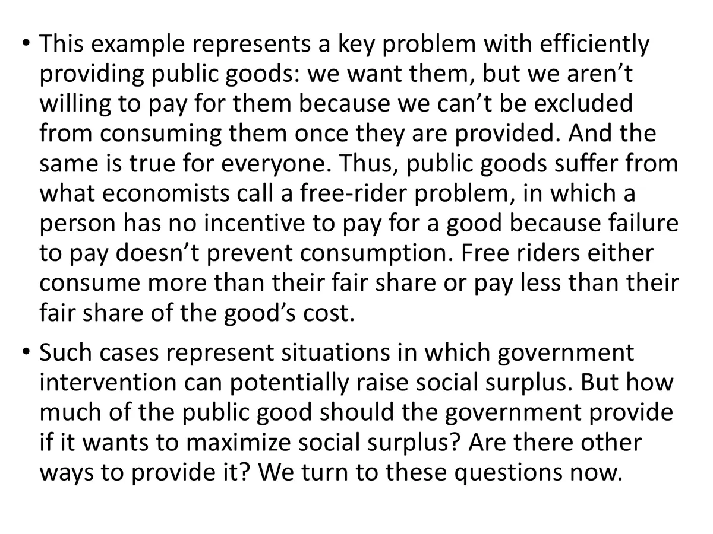
这就引出公共品的核心失灵——搭便车问题（free-rider problem）：
一个人没有激励为某种物品付费，因为不付费也不能阻止他消费。
搭便车者的行为特征是：消费超过自己应承担的份额，或支付少于自己应承担的份额（consume more than fair share, or pay less than fair share）。
课件接着抛出两个问题，也是本讲后半段的结构：
- 如果政府要提供公共品并最大化社会剩余，应该提供多少？
- 除了政府，还有没有别的提供方式？
幻灯片原文 / 板书
This example represents a key problem with efficiently providing public goods: we want them, but we aren’t willing to pay for them because we can’t be excluded from consuming them once they are provided. And the same is true for everyone. Thus, public goods suffer from what economists call a free-rider problem, in which a person has no incentive to pay for a good because failure to pay doesn’t prevent consumption. Free riders either consume more than their fair share or pay less than their fair share of the good’s cost. Such cases represent situations in which government intervention can potentially raise social surplus. But how much of the public good should the government provide if it wants to maximize social surplus? Are there other ways to provide it? We turn to these questions now.
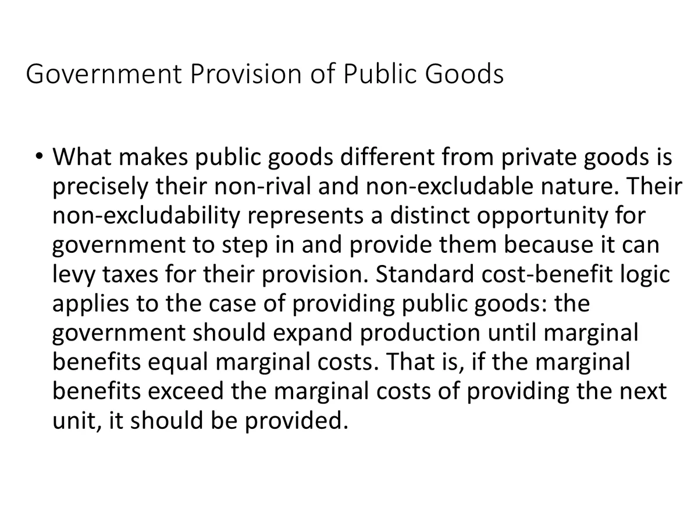
政府对公共品的提供。 为什么政府能插手？因为公共品的不可排他性恰好给了政府一个位置：它可以征税来为公共品融资——这是私人做不到的。
但「政府提供」不等于「随便提供」。标准逻辑仍然是成本收益分析：
一直扩大到边际收益 = 边际成本为止。如果下一单位公共品的边际收益大于边际成本，就应该提供。
注意这句话的普适性：它和第 2 讲的 MB = MC、第 4 讲的 MR = MC 是同一条规则，只是把「收益」换成了「全社会的边际收益」。
幻灯片原文 / 板书
Government Provision of Public Goods --- What makes public goods different from private goods is precisely their non-rival and non-excludable nature. Their non-excludability represents a distinct opportunity for government to step in and provide them because it can levy taxes for their provision. Standard cost-benefit logic applies to the case of providing public goods: the government should expand production until marginal benefits equal marginal costs. That is, if the marginal benefits exceed the marginal costs of providing the next unit, it should be provided.
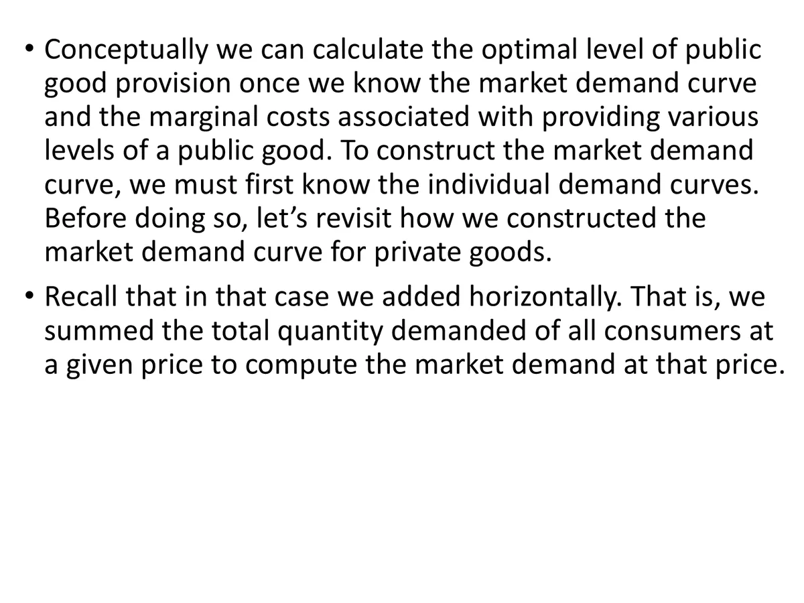
要算最优提供量，需要两样东西：市场需求曲线与边际成本曲线。
而市场需求曲线要先由个人需求曲线合成。课件在这里做了一次「复习」：
对私人物品，市场需求的构造方法是横向加总（horizontal summation）——在给定价格下，把所有人的需求量相加。
下一张图（Exhibit 9.11）先用牛仔裤把这个方法演示一遍，好和公共品的纵向加总做对照。
幻灯片原文 / 板书
Conceptually we can calculate the optimal level of public good provision once we know the market demand curve and the marginal costs associated with providing various levels of a public good. To construct the market demand curve, we must first know the individual demand curves. Before doing so, let’s revisit how we constructed the market demand curve for private goods. Recall that in that case we added horizontally. That is, we summed the total quantity demanded of all consumers at a given price to compute the market demand at that price.
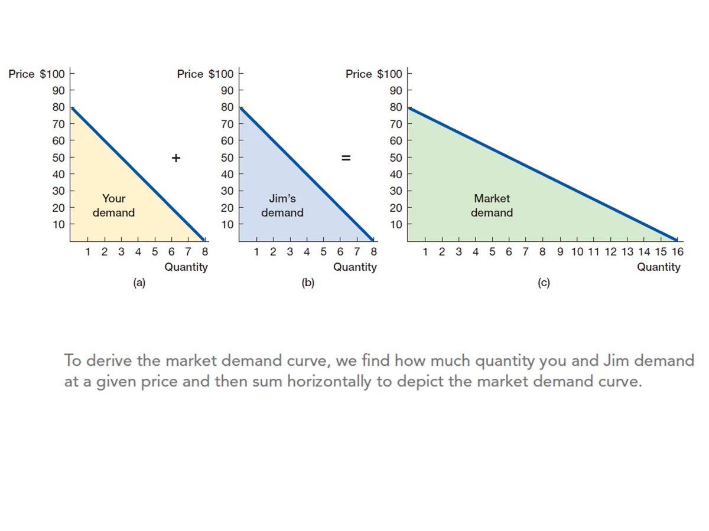
（本页是 Exhibit 9.11 的图形页：私人物品需求的横向加总。）
三个面板：
- (a) 你的需求：在价格 50 美元时，你要 3 条牛仔裤。
- (b) Jim 的需求：同样在 50 美元时，他也要 3 条。
- (c) 市场需求：把「同一价格下的数量」相加 → 50 美元时市场要 6 条。
读图的要点只有一句：横向加总 = 在同一价格水平上把数量加起来。因为私人物品是竞争的，同一件牛仔裤不能同时属于两个人，所以数量可以相加。
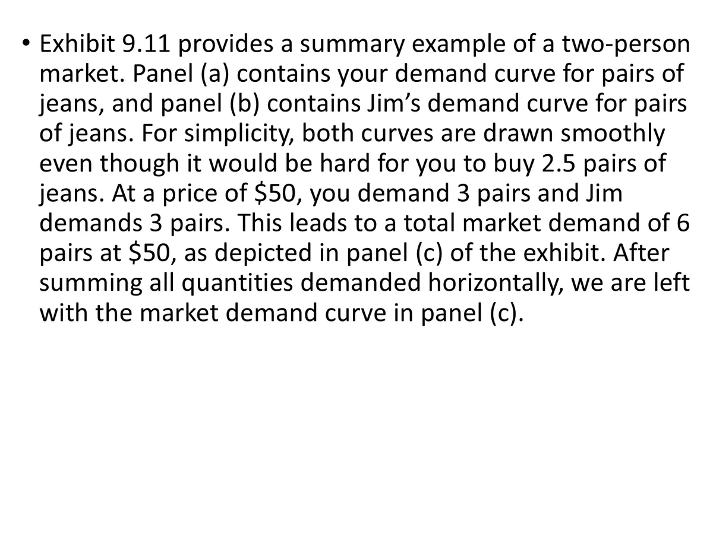
把这套做法用到公共品上，逻辑相似，但结论完全不同——因为非竞争性。
- 私人物品：一件只能给一个人，所以「数量」可以相加。
- 公共品：同一单位可以同时被你和我消费，所以能相加的不是数量，而是支付意愿。
于是公共品的市场需求用纵向加总（vertical summation）：
在每一个数量水平上，把每个人愿意为这一单位支付的金额相加。
这样得到的市场需求的含义是：全社会为「再多一单位公共品」愿意付多少钱（总边际收益）。
幻灯片原文 / 板书
Exhibit 9.11 provides a summary example of a two-person market. Panel (a) contains your demand curve for pairs of jeans, and panel (b) contains Jim’s demand curve for pairs of jeans. For simplicity, both curves are drawn smoothly even though it would be hard for you to buy 2.5 pairs of jeans. At a price of $50, you demand 3 pairs and Jim demands 3 pairs. This leads to a total market demand of 6 pairs at $50, as depicted in panel (c) of the exhibit. After summing all quantities demanded horizontally, we are left with the market demand curve in panel (c).
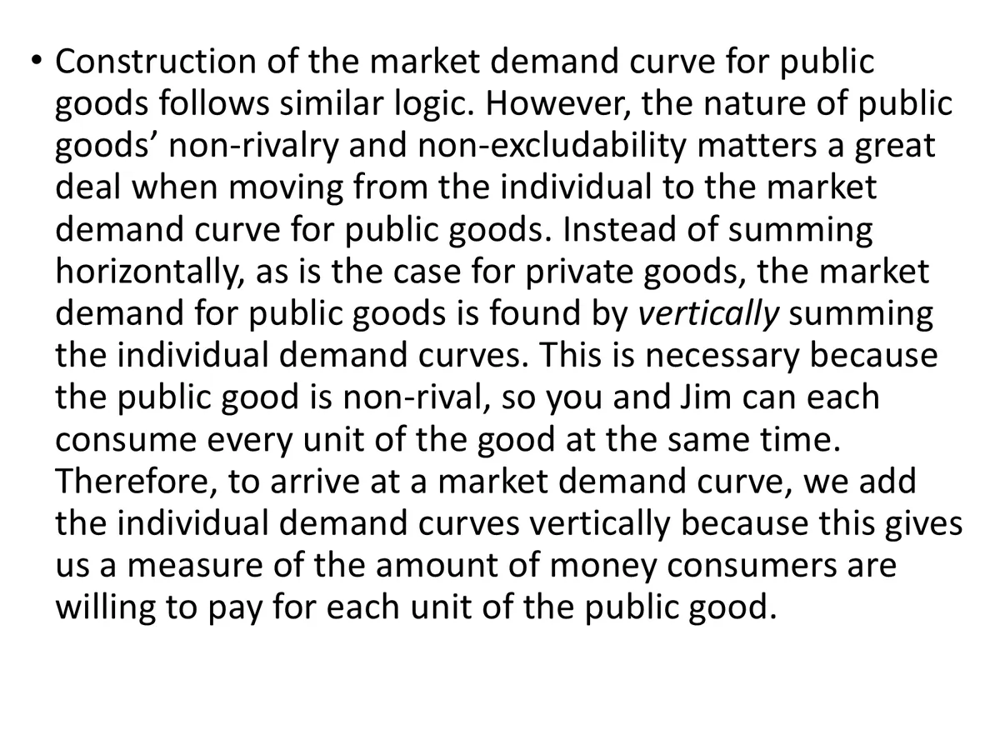
这一页把上面的直觉说透，是三句话：
- 公共品非竞争，所以你和我可以同时消费每一单位。
- 因此不能把数量相加，而要把价格（支付意愿）相加。
- 纵向加总得到的曲线，度量的是「为每一单位公共品，消费者总共愿意付多少钱」。
一句话记法：私人物品加「量」，公共品加「价」。
幻灯片原文 / 板书
Construction of the market demand curve for public goods follows similar logic. However, the nature of public goods’ non-rivalry and non-excludability matters a great deal when moving from the individual to the market demand curve for public goods. Instead of summing horizontally, as is the case for private goods, the market demand for public goods is found by vertically summing the individual demand curves. This is necessary because the public good is non-rival, so you and Jim can each consume every unit of the good at the same time. Therefore, to arrive at a market demand curve, we add the individual demand curves vertically because this gives us a measure of the amount of money consumers are willing to pay for each unit of the public good.
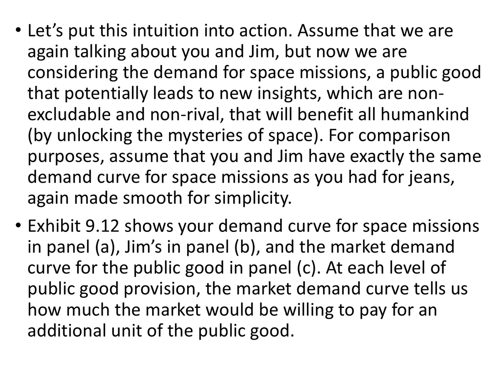
课件换成太空探索任务（space missions）做例子：它的成果（对宇宙的新认识）不可排他、非竞争，惠及全人类。
为便于比较，假设你和 Jim 对太空任务的需求曲线与上面对牛仔裤的完全一样。
- (a) 你的需求
- (b) Jim 的需求
- (c) 公共品的市场需求（纵向加总）
课件强调读法：在每一个提供水平上，市场需求曲线告诉你「市场愿意为再增加一单位公共品付多少钱」。
幻灯片原文 / 板书
Let’s put this intuition into action. Assume that we are again talking about you and Jim, but now we are considering the demand for space missions, a public good that potentially leads to new insights, which are non-excludable and non-rival, that will benefit all humankind (by unlocking the mysteries of space). For comparison purposes, assume that you and Jim have exactly the same demand curve for space missions as you had for jeans, again made smooth for simplicity. Exhibit 9.12 shows your demand curve for space missions in panel (a), Jim’s in panel (b), and the market demand curve for the public good in panel (c). At each level of public good provision, the market demand curve tells us how much the market would be willing to pay for an additional unit of the public good.
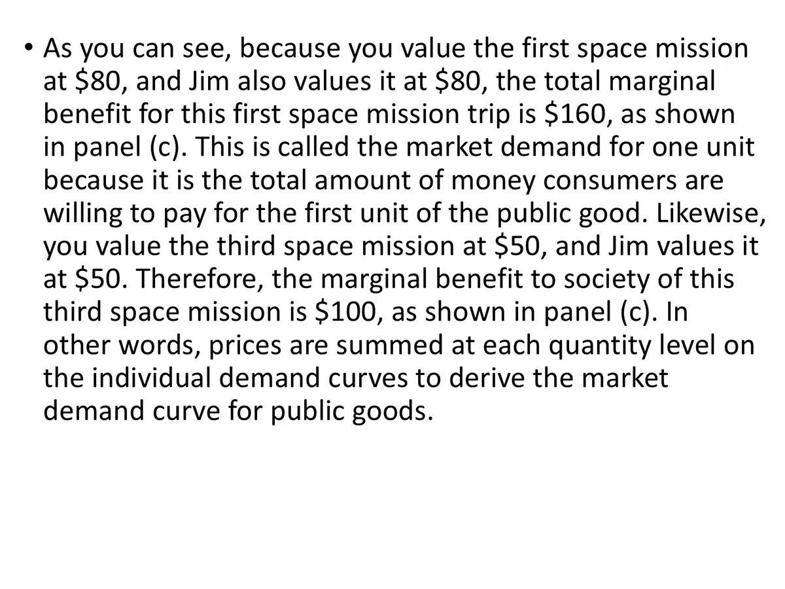
具体数字（这是本讲最应该会算的一题）：
- 第 1 次太空任务：你估值 80 美元，Jim 也估值 80 美元 → 社会边际收益 = 160 美元。
- 第 3 次太空任务：你估值 50 美元，Jim 也估值 50 美元 → 社会边际收益 = 100 美元。
注意术语：这个「160」叫一单位公共品的市场需求，因为它是消费者为第一单位总共愿意付的钱。
方法总结成一句：在每个数量水平上，把个人需求曲线上的价格相加，得到公共品的市场需求曲线。
幻灯片原文 / 板书
As you can see, because you value the first space mission at $80, and Jim also values it at $80, the total marginal benefit for this first space mission trip is $160, as shown in panel (c). This is called the market demand for one unit because it is the total amount of money consumers are willing to pay for the first unit of the public good. Likewise, you value the third space mission at $50, and Jim values it at $50. Therefore, the marginal benefit to society of this third space mission is $100, as shown in panel (c). In other words, prices are summed at each quantity level on the individual demand curves to derive the market demand curve for public goods.
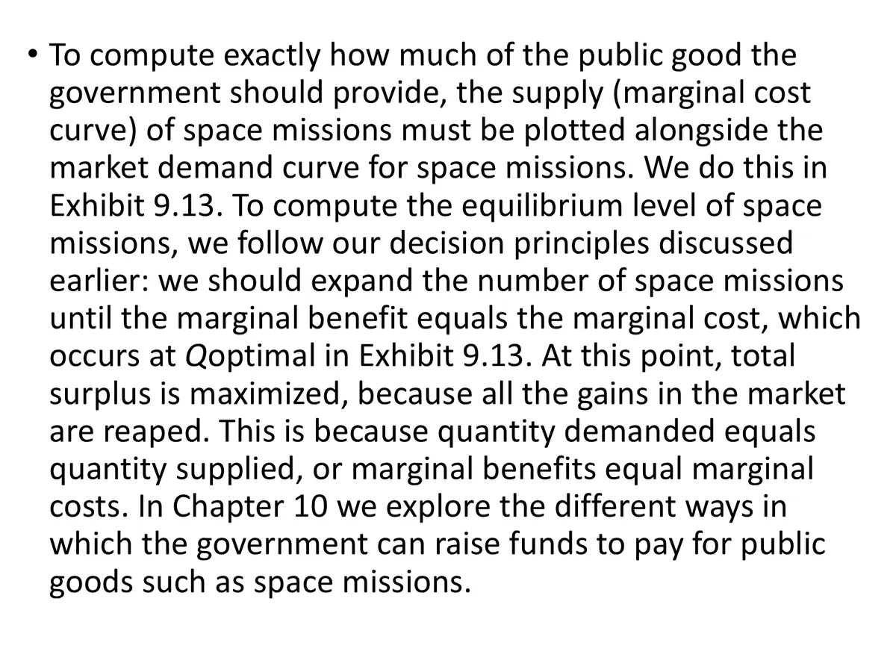
最后一步：把供给（边际成本）曲线和公共品的市场需求曲线画在同一张图上——这就是 Exhibit 9.13。
最优数量在 MB = MC 处，记作 Q_optimal。
在这一产量上：
课件顺带埋了一个伏笔：政府靠什么筹钱来支付这些公共品？那是第 10 章（税收）的内容。
幻灯片原文 / 板书
To compute exactly how much of the public good the government should provide, the supply (marginal cost curve) of space missions must be plotted alongside the market demand curve for space missions. We do this in Exhibit 9.13. To compute the equilibrium level of space missions, we follow our decision principles discussed earlier: we should expand the number of space missions until the marginal benefit equals the marginal cost, which occurs at Qoptimal in Exhibit 9.13. At this point, total surplus is maximized, because all the gains in the market are reaped. This is because quantity demanded equals quantity supplied, or marginal benefits equal marginal costs. In Chapter 10 we explore the different ways in which the government can raise funds to pay for public goods such as space missions.
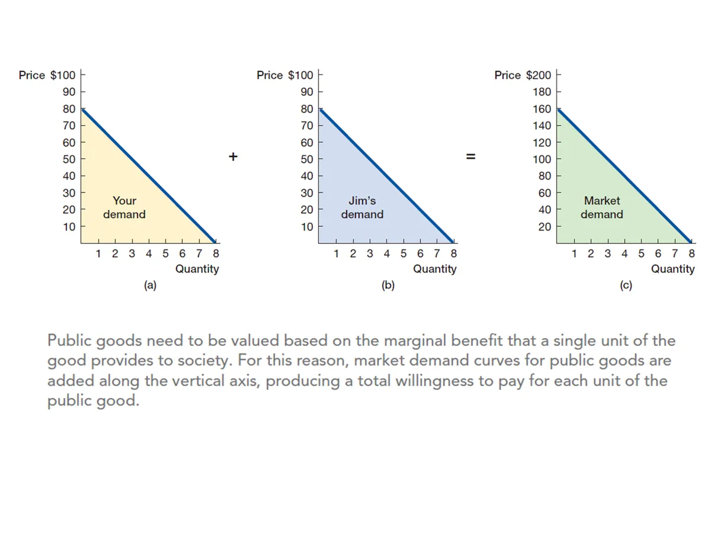
（本页是 Exhibit 9.13 的图形页：公共品的最优提供量。）
读图要点：
- 横轴是公共品数量（太空任务的次数），纵轴是钱。
- 向下倾斜的曲线是纵向加总得到的市场需求（= 社会边际收益）。
- 向上倾斜（或水平）的曲线是边际成本。
- 交点对应 Q_optimal，左边的三角形区域是总剩余；在交点左侧，增加一单位带来的收益大于成本，所以应该继续增加；在右侧则相反。
这就是「政府该提供多少公共品」的完整答案。
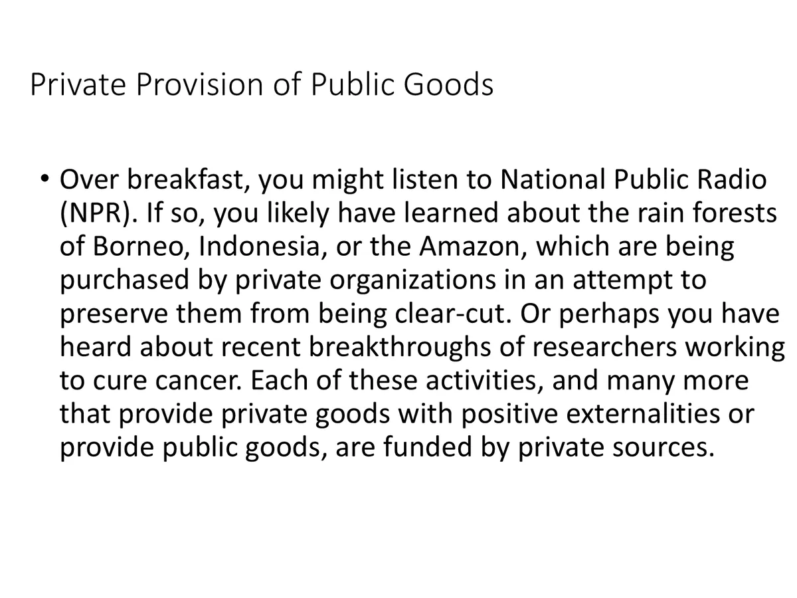
私人提供公共品（Private Provision of Public Goods）。
课件先破除一个错觉：政府虽然是公共品的重要提供者，但不是唯一提供者。
早餐时听 NPR（美国公共广播）、听说私人组织买下婆罗洲或亚马逊的雨林以阻止砍伐、听说癌症研究的突破——这些活动的资金来源都是私人。
它们要么是「带正外部性的私人物品」，要么是「公共品」，都可能由私人出钱。
幻灯片原文 / 板书
Private Provision of Public Goods --- Over breakfast, you might listen to National Public Radio (NPR). If so, you likely have learned about the rain forests of Borneo, Indonesia, or the Amazon, which are being purchased by private organizations in an attempt to preserve them from being clear-cut. Or perhaps you have heard about recent breakthroughs of researchers working to cure cancer. Each of these activities, and many more that provide private goods with positive externalities or provide public goods, are funded by private sources.
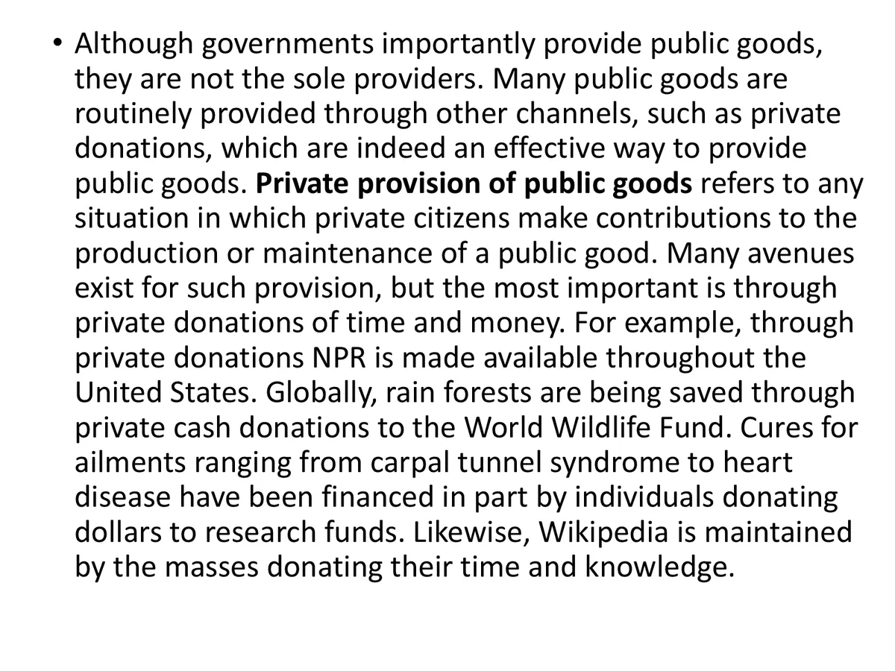
给「私人提供」下定义：
私人公民为公共品的生产或维护做出贡献的任何情形（private citizens make contributions to the production or maintenance of a public good）。
最重要的渠道是私人的时间与金钱捐赠。课件的例子一串：
- NPR 靠私人捐款在全美播出。
- 世界自然基金会（WWF） 靠私人捐款买雨林。
- 从腕管综合征到心脏病的研究，部分由个人捐款资助。
- 维基百科靠大众捐时间、捐知识维护。
注意维基百科这个例子的特殊性：它提供的是非竞争、不可排他的知识，却靠「规范性激励」（认同、荣誉、互惠）解决了搭便车。
幻灯片原文 / 板书
Although governments importantly provide public goods, they are not the sole providers. Many public goods are routinely provided through other channels, such as private donations, which are indeed an effective way to provide public goods. Private provision of public goods refers to any situation in which private citizens make contributions to the production or maintenance of a public good. Many avenues exist for such provision, but the most important is through private donations of time and money. For example, through private donations NPR is made available throughout the United States. Globally, rain forests are being saved through private cash donations to the World Wildlife Fund. Cures for ailments ranging from carpal tunnel syndrome to heart disease have been financed in part by individuals donating dollars to research funds. Likewise, Wikipedia is maintained by the masses donating their time and knowledge.
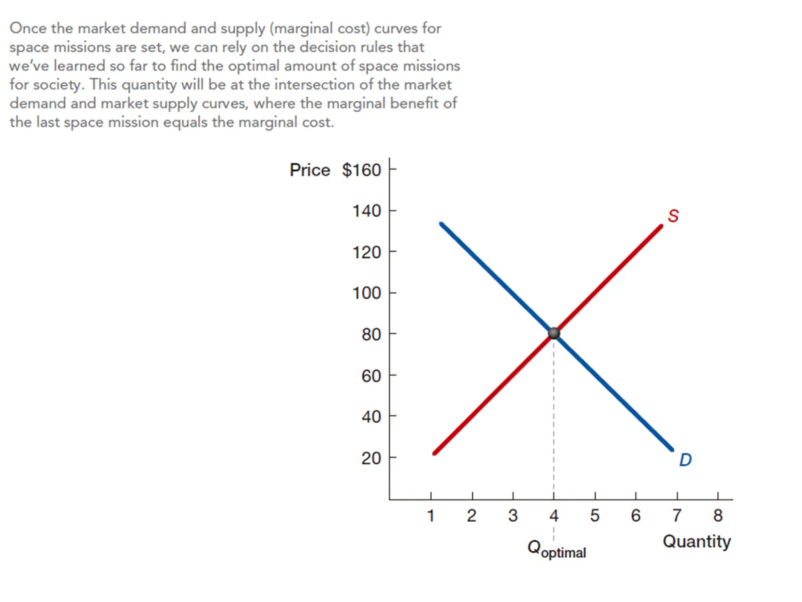
（本页是 Exhibit 9.14 的图形页：美国慈善捐赠的增长。）
这是一张时间序列图：
- 横轴：年份（1971 年起，跨 44 年）。
- 纵轴：年度个人慈善捐赠金额。
- 曲线整体向上：从约 1250 亿美元/年增长到 2015 年的约 3750 亿美元/年。
读图结论：私人捐赠的规模并不小，它是公共品供给中一个真实且不断增长的部门。
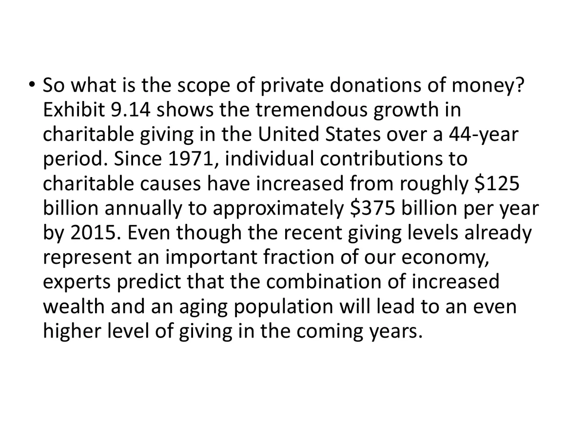
（承接上页）课件点明数据：1971 年以来，个人对慈善事业的捐款从大约 1250 亿美元/年 增长到 2015 年的约 3750 亿美元/年。
这个量级说明两件事：
- 私人提供不是边角料，它占经济中相当重要的比例。
- 专家预测：随着财富增加与人口老龄化，未来捐赠还会更高（老年人的捐赠倾向更强）。
幻灯片原文 / 板书
So what is the scope of private donations of money? Exhibit 9.14 shows the tremendous growth in charitable giving in the United States over a 44-year period. Since 1971, individual contributions to charitable causes have increased from roughly $125 billion annually to approximately $375 billion per year by 2015. Even though the recent giving levels already represent an important fraction of our economy, experts predict that the combination of increased wealth and an aging population will lead to an even higher level of giving in the coming years.
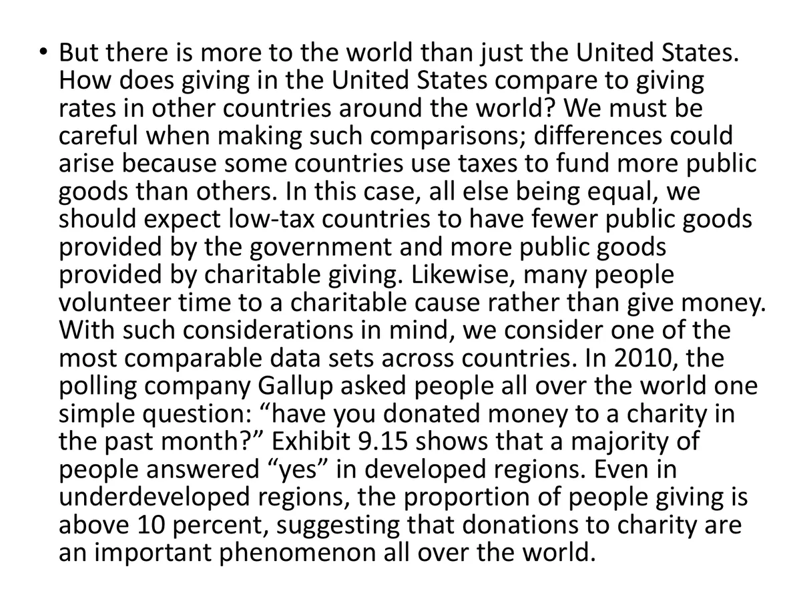
再做一个跨国比较，但要小心方法。
课件提醒两个陷阱：
- 有些国家用税收提供了更多公共品，所以低税国家看起来「慈善多」，其实只是政府少做了。
- 很多人捐时间（志愿服务）而不捐钱，只统计钱会低估总贡献。
于是课件选了一个口径统一的数据：2010 年 盖洛普（Gallup）在全球问同一个问题——「过去一个月，你有没有向慈善机构捐过钱？」
结果（Exhibit 9.15）：
- 发达地区多数人回答「是」。
- 即使在不发达地区，捐赠者比例也超过 10%。
结论：捐赠是世界范围的普遍现象，不是某个国家的文化特产。
幻灯片原文 / 板书
But there is more to the world than just the United States. How does giving in the United States compare to giving rates in other countries around the world? We must be careful when making such comparisons; differences could arise because some countries use taxes to fund more public goods than others. In this case, all else being equal, we should expect low-tax countries to have fewer public goods provided by the government and more public goods provided by charitable giving. Likewise, many people volunteer time to a charitable cause rather than give money. With such considerations in mind, we consider one of the most comparable data sets across countries. In 2010, the polling company Gallup asked people all over the world one simple question: “have you donated money to a charity in the past month?” Exhibit 9.15 shows that a majority of people answered “yes” in developed regions. Even in underdeveloped regions, the proportion of people giving is above 10 percent, suggesting that donations to charity are an important phenomenon all over the world.
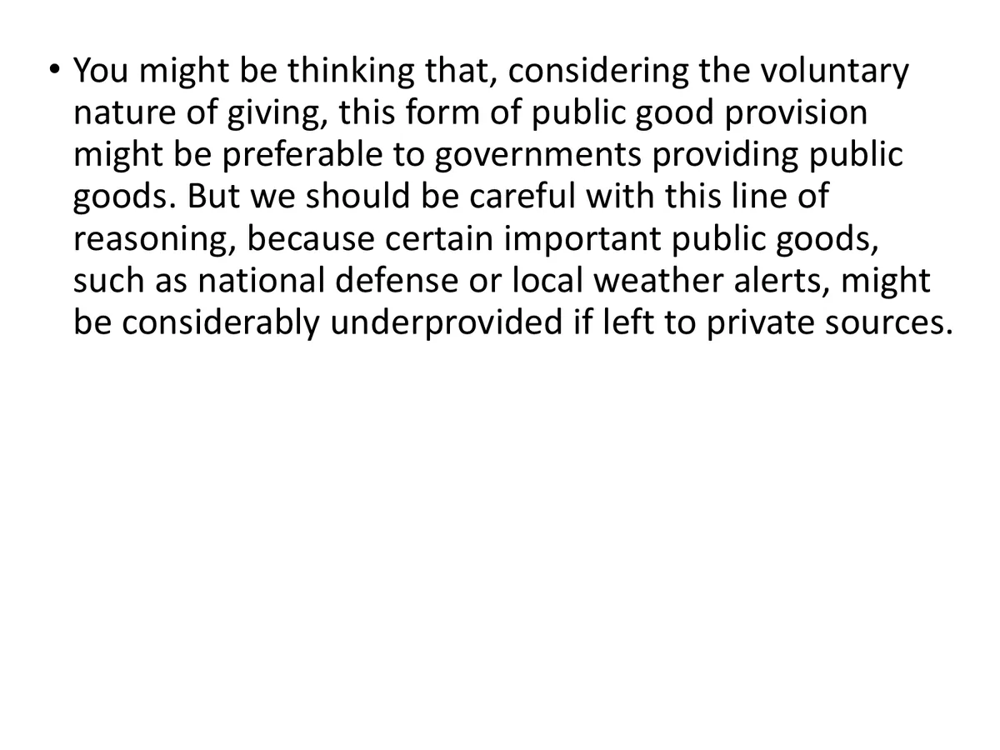
但别急着下结论说「私人自愿捐赠比政府提供更好」。课件立刻踩了刹车：
某些重要的公共品——国防、地方天气预警——如果完全交给私人，会严重供给不足。
原因是第 12 页的搭便车逻辑：收益无法与付费绑定，而这类公共品的规模又大到个人捐赠无法覆盖。
所以「私人提供」是补充，不是替代。
幻灯片原文 / 板书
You might be thinking that, considering the voluntary nature of giving, this form of public good provision might be preferable to governments providing public goods. But we should be careful with this line of reasoning, because certain important public goods, such as national defense or local weather alerts, might be considerably underprovided if left to private sources.
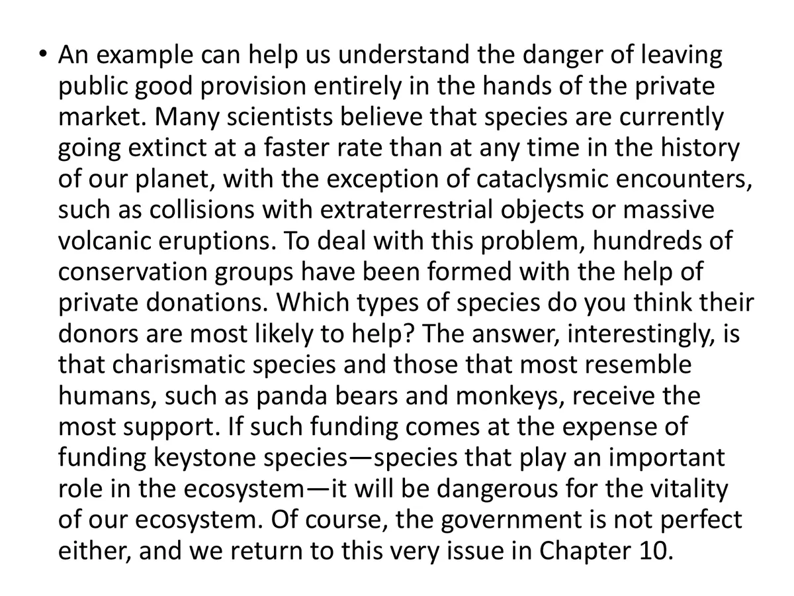
用一个物种保护的例子说明「完全交给私人」的危险：
- 许多科学家认为，除了小行星撞击、超级火山这类灾难，当前物种灭绝速度快于地球史上任何时期。
- 于是出现了数百个靠私人捐款运作的保护组织。
问题来了：捐款人最愿意救哪些物种？
答案是——有魅力、且最像人的物种（charismatic species）：熊猫、猴子。
危险在于：如果这些钱是从关键物种（keystone species，对生态系统起关键作用的物种）那里「抢」来的，整个生态系统的活力就会受损。
结论：私人捐赠反映的是捐赠者的偏好，不是生态学的优先级。政府也不完美（第 10 章再谈），但至少它可以用税收做「不讨喜但重要」的事。
幻灯片原文 / 板书
An example can help us understand the danger of leaving public good provision entirely in the hands of the private market. Many scientists believe that species are currently going extinct at a faster rate than at any time in the history of our planet, with the exception of cataclysmic encounters, such as collisions with extraterrestrial objects or massive volcanic eruptions. To deal with this problem, hundreds of conservation groups have been formed with the help of private donations. Which types of species do you think their donors are most likely to help? The answer, interestingly, is that charismatic species and those that most resemble humans, such as panda bears and monkeys, receive the most support. If such funding comes at the expense of funding keystone species—species that play an important role in the ecosystem—it will be dangerous for the vitality of our ecosystem. Of course, the government is not perfect either, and we return to this very issue in Chapter 10.
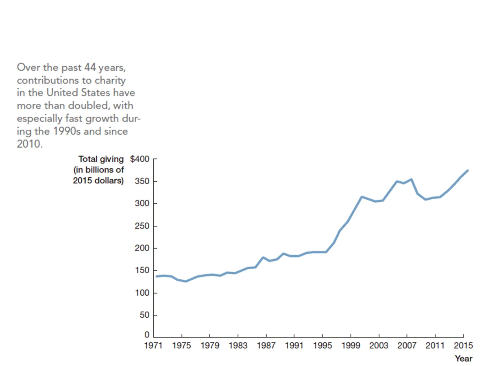
（图片页：物种保护/受威胁动物的照片组。）
这页没有文字，接上一页的论证：照片展示的是那些容易获得公众捐款的「明星物种」。
读这一页要读出反讽：最能打动人的，未必是最该被保护的。这就是私人提供公共品时的偏好错配问题。
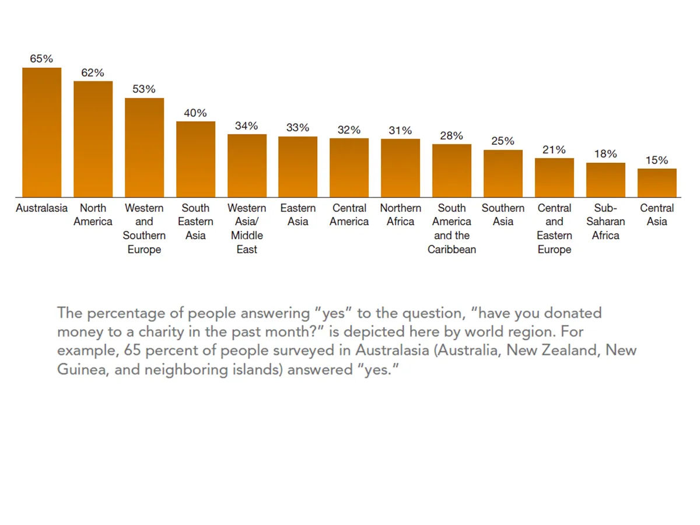
（图片页：延续上一页的物种/生态保护主题。）
同样没有文字。可以把这两页当作一个视觉停顿：从「私人捐赠的数字很可观」转到「私人捐赠的选择未必正确」，为下一页的共有资源做情绪与逻辑上的收束。
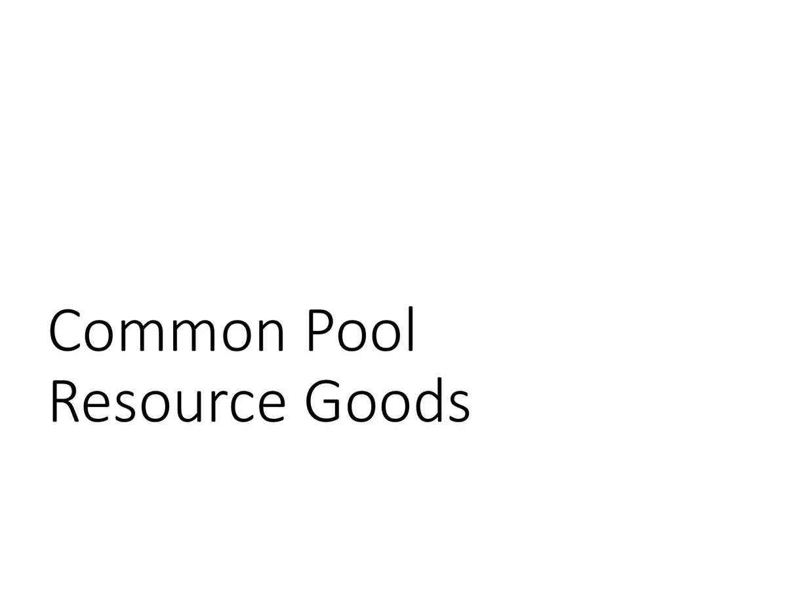
进入本讲的第二种失灵：共有资源物品（Common Pool Resource Goods）。
一句话预告：它与公共品是「邻居」——都不排他，但它竞争。正因为竞争，问题从「没人愿意付钱」变成了「大家抢着用光」。
幻灯片原文 / 板书
Common Pool Resource Goods
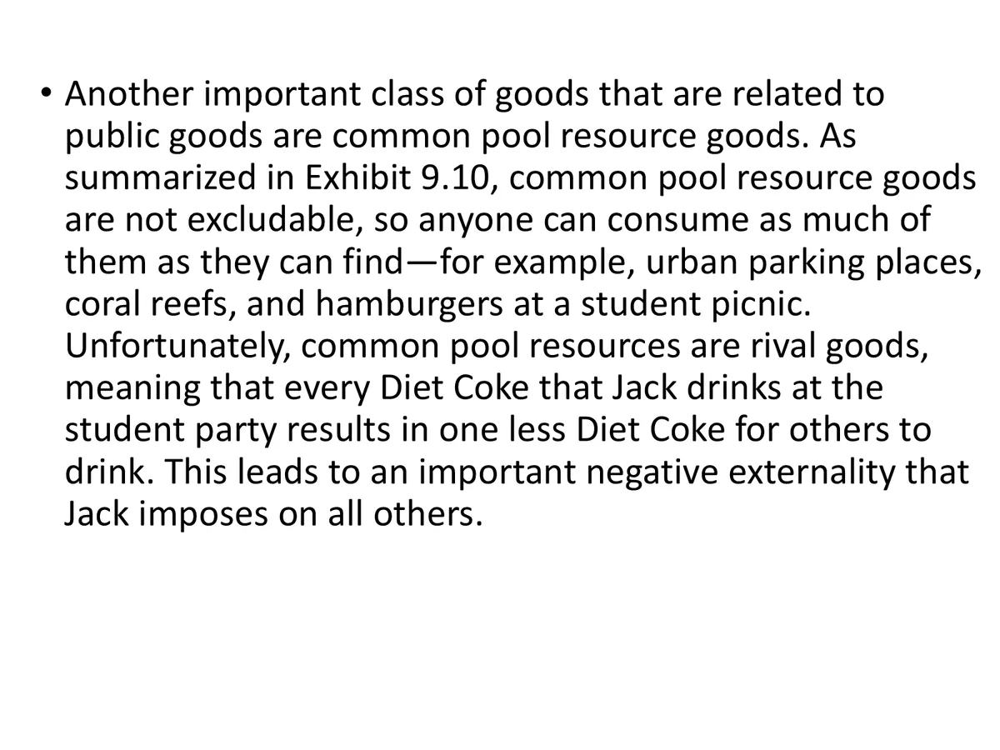
正式定义：
- 不可排他：谁都能消费，能找到多少就用多少。例子：城市停车位、珊瑚礁、学生野餐会上的汉堡。
- 竞争：Jack 在学生派对上每喝一罐健怡可乐，别人就少一罐。
结果是：Jack 的使用给别人带来了一个重要的负外部性。
注意这里的结构：不可排他 + 竞争 = 负外部性。这是把第 7 讲的框架直接搬过来用。
幻灯片原文 / 板书
Another important class of goods that are related to public goods are common pool resource goods. As summarized in Exhibit 9.10, common pool resource goods are not excludable, so anyone can consume as much of them as they can find—for example, urban parking places, coral reefs, and hamburgers at a student picnic. Unfortunately, common pool resources are rival goods, meaning that every Diet Coke that Jack drinks at the student party results in one less Diet Coke for others to drink. This leads to an important negative externality that Jack imposes on all others.
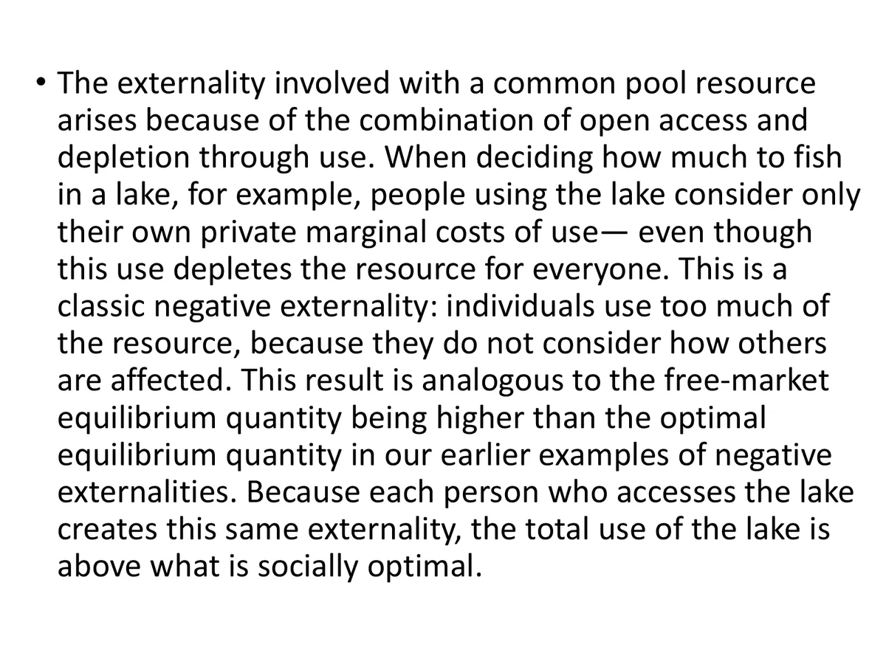
外部性从哪来？课件给了一个精准的表述：
共有资源的外部性来自「开放进入（open access）」与「使用即耗竭（depletion through use）」的组合。
以钓鱼为例：
- 每个人决定钓多少时，只考虑自己的私人边际成本。
- 但这次捕捞耗竭了所有人的资源，这个成本他没有承担。
于是：个人用得太多。这正是经典的负外部性——自由市场均衡数量高于社会最优数量。
因为每个进入湖泊的人都制造同样的外部性，总使用量必然高于社会最优。
幻灯片原文 / 板书
The externality involved with a common pool resource arises because of the combination of open access and depletion through use. When deciding how much to fish in a lake, for example, people using the lake consider only their own private marginal costs of use— even though this use depletes the resource for everyone. This is a classic negative externality: individuals use too much of the resource, because they do not consider how others are affected. This result is analogous to the free-market equilibrium quantity being higher than the optimal equilibrium quantity in our earlier examples of negative externalities. Because each person who accesses the lake creates this same externality, the total use of the lake is above what is socially optimal.
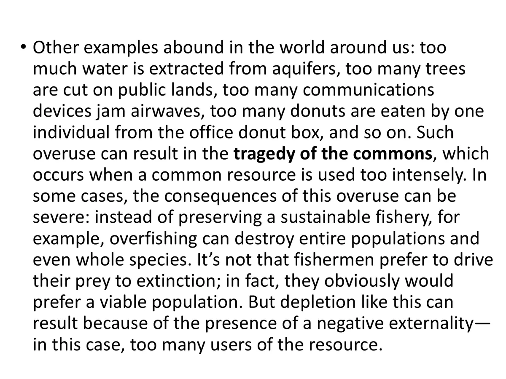
现实中的例子一串，课件列得很密：
- 从含水层抽水过多；
- 在公共土地上砍树过多；
- 太多通信设备挤占同一段无线电频段；
- 办公室里一盒甜甜圈，一个人吃掉太多。
这些过度使用会导致公地悲剧（tragedy of the commons）：公共资源被使用得过于密集。
后果有时非常严重：过度捕捞会让整个鱼类种群崩溃，甚至物种灭绝。
关键的一句辩解与反驳：渔民并不想把自己的猎物捕到灭绝——他们显然更希望鱼群可持续。但负外部性（使用者太多）会让「每个人都不想要的结果」发生。这就是「个体理性 → 集体灾难」。
幻灯片原文 / 板书
Other examples abound in the world around us: too much water is extracted from aquifers, too many trees are cut on public lands, too many communications devices jam airwaves, too many donuts are eaten by one individual from the office donut box, and so on. Such overuse can result in the tragedy of the commons, which occurs when a common resource is used too intensely. In some cases, the consequences of this overuse can be severe: instead of preserving a sustainable fishery, for example, overfishing can destroy entire populations and even whole species. It’s not that fishermen prefer to drive their prey to extinction; in fact, they obviously would prefer a viable population. But depletion like this can result because of the presence of a negative externality—in this case, too many users of the resource.
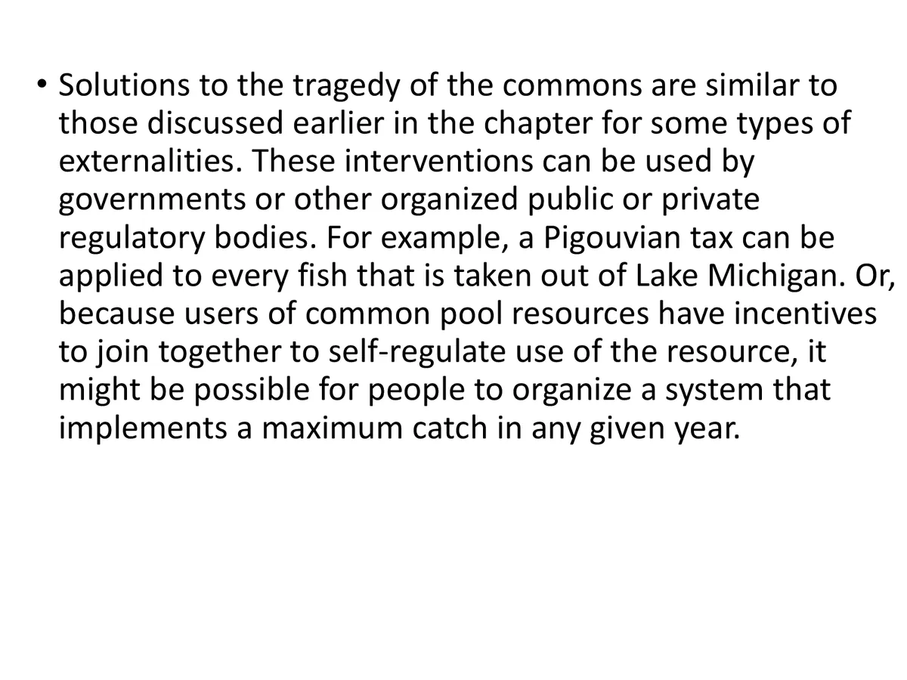
怎么解决公地悲剧？课件说：办法与前面讨论的外部性解法同类，可以由政府，也可以由有组织的公共/私人监管机构实施。
注意第二种解法的逻辑：因为大家都是受害者，所以有动力坐下来谈判——这正是科斯式思路（第 7 讲）在公共资源上的应用。
幻灯片原文 / 板书
Solutions to the tragedy of the commons are similar to those discussed earlier in the chapter for some types of externalities. These interventions can be used by governments or other organized public or private regulatory bodies. For example, a Pigouvian tax can be applied to every fish that is taken out of Lake Michigan. Or, because users of common pool resources have incentives to join together to self-regulate use of the resource, it might be possible for people to organize a system that implements a maximum catch in any given year.
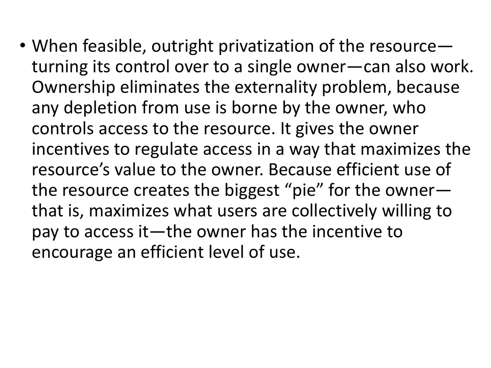
第三种解法：私有化（privatization）——在可行时，把资源的控制权交给单一所有者。
为什么有效？课件给了一条非常经济学家的推理：
- 所有权消除了外部性：任何耗竭都由所有者自己承担。
- 所有者因此有激励去管制进入，使资源对他的价值最大化。
- 而「资源对他的价值最大化」要求有效率地使用——因为高效使用才能把「饼」做到最大，也就是让使用者集体愿意支付的总金额最大。
一句话总结：把「公地的悲剧」变成「业主的资产管理」。这也解释了为什么现实中大量公共资源被划成产权清晰的牧场、渔场、林场。
幻灯片原文 / 板书
When feasible, outright privatization of the resource—turning its control over to a single owner—can also work. Ownership eliminates the externality problem, because any depletion from use is borne by the owner, who controls access to the resource. It gives the owner incentives to regulate access in a way that maximizes the resource’s value to the owner. Because efficient use of the resource creates the biggest “pie” for the owner—that is, maximizes what users are collectively willing to pay to access it—the owner has the incentive to encourage an efficient level of use.